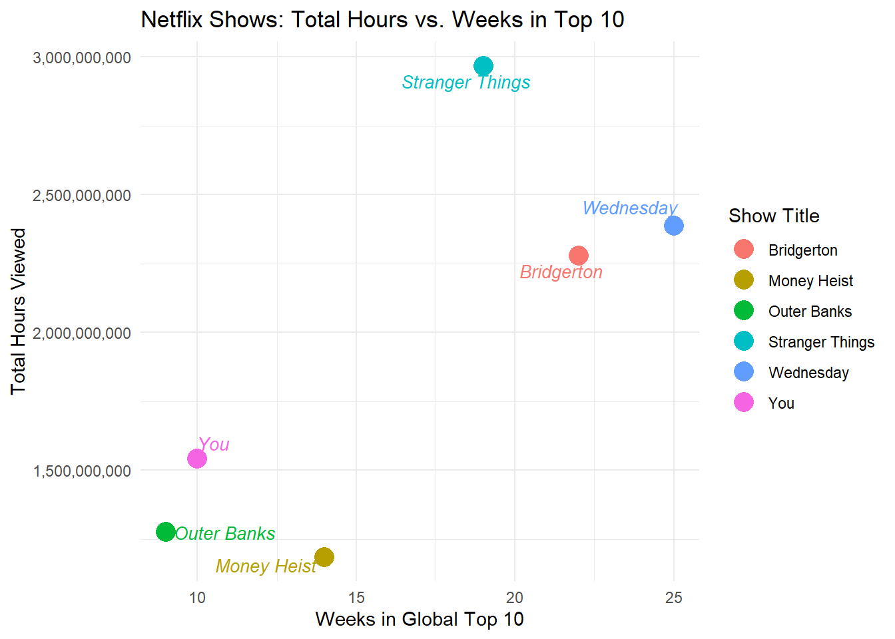

We’ll be analyzing Netflix’s Global Top 10 viewing data, which provides fascinating insights into worldwide streaming preferences and trends. This dataset captures weekly performance metrics for the most popular content on Netflix’s platform.
Setup Code
Code
# LOAD & INSTALL REQUIRED PACKACGESif(!require("tidyverse")) install.packages("tidyverse")library(tidyverse)library(readr)library(dplyr)if(!require("DT")) install.packages("DT")library(DT)if(!require("knitr")) install.packages("knitr")library(knitr)if(!require("scales")) install.packages("scales")library(scales)if(!require("ggrepel")) install.packages("ggrepel")library(ggrepel)if(!require("rnaturalearth")) install.packages("rnaturalearth")if(!require("rnaturalearthdata")) install.packages("rnaturalearthdata")library(rnaturalearth)library(rnaturalearthdata)if(!require("sf")) install.packages("sf")library(sf)# CREATE DATA DIRECTORY IF IT DOESN'T EXISTif(!dir.exists(file.path("data", "mp01"))){dir.create(file.path("data", "mp01"), showWarnings=FALSE, recursive=TRUE)}# DOWNLOAD DATA IF IT DOESN'T EXIST LOCALLYGLOBAL_TOP_10_FILENAME <-file.path("data", "mp01", "global_top10_alltime.csv")if(!file.exists(GLOBAL_TOP_10_FILENAME)){download.file("https://www.netflix.com/tudum/top10/data/all-weeks-global.tsv", destfile=GLOBAL_TOP_10_FILENAME)}COUNTRY_TOP_10_FILENAME <-file.path("data", "mp01", "country_top10_alltime.csv")if(!file.exists(COUNTRY_TOP_10_FILENAME)){download.file("https://www.netflix.com/tudum/top10/data/all-weeks-countries.tsv", destfile=COUNTRY_TOP_10_FILENAME)}
Code
# LOAD & CLEAN GLOBAL DATAGLOBAL_TOP_10 <-read_tsv(GLOBAL_TOP_10_FILENAME)str(GLOBAL_TOP_10)glimpse(GLOBAL_TOP_10)GLOBAL_TOP_10 <- GLOBAL_TOP_10 |>mutate(season_title =if_else(season_title =="N/A", NA_character_, season_title))# LOAD & CLEAN COUNTRY DATACOUNTRY_TOP_10 <-read_tsv(COUNTRY_TOP_10_FILENAME, na ="N/A")str(COUNTRY_TOP_10)glimpse(COUNTRY_TOP_10)
Code
# INITIAL EXPLORATION OF DATAGLOBAL_TOP_10 |>head(n=20) |>datatable(options=list(searching=FALSE, info=FALSE), caption="Table 1: Global Top 10 of All Time")format_titles <-function(df){colnames(df) <-str_replace_all(colnames(df), "_", " ") |>str_to_title() df}GLOBAL_TOP_10 |>format_titles() |>head(n=20) |>datatable(options=list(searching=FALSE, info=FALSE),caption=) |>formatRound(c('Weekly Hours Viewed', 'Weekly Views'))GLOBAL_TOP_10 |>select(-season_title) |>format_titles() |>head(n=20) |>datatable(options=list(searching=FALSE, info=FALSE)) |>formatRound(c('Weekly Hours Viewed', 'Weekly Views'))
Dataset Overview
Our data contains 9 key variables that paint a comprehensive picture of Netflix’s top-performing content:
Temporal & Ranking Information:
Week: The specific date for each weekly measurement period
Weekly Rank: Position in the top 10 (1-10) for that week
Content Classification:
Category: Content type (Films English, Films Non-English, TV English, TV Non-English)
Show Title: The main title of the content
Season Title: Specific season information (for TV shows) or NA for films
Performance Metrics:
Weekly Hours Viewed: Total hours watched globally that week
Weekly Views: Number of unique viewing instances
Runtime: Average runtime per episode/film (in minutes)
Cumulative Weeks In Top 10: Total weeks the title has appeared in top 10
This dataset offers rich opportunities to understand global entertainment consumption patterns, content performance dynamics, and the evolving landscape of streaming preferences across Netflix’s worldwide subscriber base.
Most Recent Global Top 10 Netflix Films
Code
# DISPLAY GLOBAL TOP 10 NETFLIX FILMS OF ALL TIMEGLOBAL_TOP_10 |>mutate(`runtime_(minutes)`=round(60* runtime)) |>select(-season_title, -runtime) |>format_titles() |>head(n=20) |>datatable(options=list(searching=FALSE, info=FALSE), caption="Most Recent Global Top 10 Netflix Films") |>formatRound(c('Weekly Hours Viewed', 'Weekly Views'), 0) |>formatStyle('Show Title',fontStyle ="italic" )
Exploratory Questions
Q1. How many different countries does Netflix operate in? (You can use the viewing history as a proxy for countries in which Netflix operates)
Netflix operates in 94 different countries based on the viewing history data.
Code
# COUNT DISTINCT COUNTRIESq1 <-n_distinct(COUNTRY_TOP_10$country_name)# MAP COUNTRIES WHERE NETFLIX OPERATESworld <-ne_countries(scale ="medium", returnclass ="sf")netflix_countries <- COUNTRY_TOP_10 |>distinct(country_iso2) |>mutate(has_netflix ="Yes")world_netflix <- world |>left_join(netflix_countries, by =c("iso_a2"="country_iso2")) |>mutate(has_netflix =ifelse(is.na(has_netflix), "No", has_netflix))world_netflix_plot <-ggplot(world_netflix) +geom_sf(aes(fill = has_netflix), color ="white", size =0.2) +scale_fill_manual(values =c("No"="grey80", "Yes"="red")) +labs(title ="Countries Where Netflix Operates",fill ="Netflix Available" ) +theme_minimal()
Q2. Which non-English-language film has spent the most cumulative weeks in the global top 10? How many weeks did it spend?
The non-English-language film that has spent the most cumulative weeks in the global top 10 is All Quiet on the Western Front with a total of 23 cumulative weeks.
Code
# FIND NON-ENGLISH FILM WITH MOST CUMULATIVE WEEKS IN GLOBAL TOP 10q2a <-GLOBAL_TOP_10 |>filter(category =="Films (Non-English)" ) |>group_by(show_title) |>summarise(cumulative_weeks_in_top_10 =n()) |>arrange(desc(cumulative_weeks_in_top_10)) |>slice(1) |>pull(show_title)q2b <-GLOBAL_TOP_10 |>filter(category =="Films (Non-English)" ) |>group_by(show_title) |>summarise(cumulative_weeks_in_top_10 =n()) |>arrange(desc(cumulative_weeks_in_top_10)) |>slice(1) |>pull(cumulative_weeks_in_top_10)
Q3. What is the longest film (English or non-English) to have ever appeared in the Netflix global Top 10? How long is it in minutes?
The longest film to have ever appeared in the Netflix global Top 10 is Pushpa 2: The Rule (Reloaded Version) with a runtime of 224 minutes.
Code
# FIND LONGEST FILM IN GLOBAL TOP 10q3a <-GLOBAL_TOP_10 |>filter(category %in%c("Films (English)", "Films (Non-English)")) |>arrange(desc(runtime)) |>slice(1) |>pull(show_title)q3b <-round(60* GLOBAL_TOP_10 |>filter(category %in%c("Films (English)", "Films (Non-English)")) |>arrange(desc(runtime)) |>slice(1) |>pull(runtime))
Q4. For each of the four categories, what program has the most total hours of global viewership?
The programs with the most total hours of global viewership in each category are:
Code
# FIND PROGRAM WITH MOST TOTAL HOURS OF GLOBAL VIEWERSHIP IN EACH CATEGORYq4a <- GLOBAL_TOP_10 |>group_by(category, show_title) |>summarise(total_hours_viewed =sum(weekly_hours_viewed)) |>arrange(category, desc(total_hours_viewed)) |>slice_max(total_hours_viewed)q4 <-datatable( q4a,colnames =str_replace_all(colnames(q4a), "_", " ") |>str_to_title(),rownames =FALSE,options =list(pageLength =4,searching=FALSE, scrollX =TRUE ) , caption ="Programs with the most viewership in each category") |>formatRound(c('total_hours_viewed'), 0) |>formatStyle('show_title',fontStyle ="italic" )
Q5. Which TV show had the longest run in a country’s Top 10? How long was this run and in what country did it occur?
The TV show with the longest run in a country’s Top 10 is Money Heist with a run of 127 weeks in Pakistan.
Code
# FIND TV SHOW WITH LONGEST RUN IN A COUNTRY'S TOP 10q5a <-COUNTRY_TOP_10 |>filter(category =="TV") |>arrange(desc(cumulative_weeks_in_top_10)) |>slice(1) |>pull(show_title)q5b <-COUNTRY_TOP_10 |>filter(category =="TV") |>arrange(desc(cumulative_weeks_in_top_10)) |>slice(1) |>pull(cumulative_weeks_in_top_10)q5c <-COUNTRY_TOP_10 |>filter(category =="TV") |>arrange(desc(cumulative_weeks_in_top_10)) |>slice(1) |>pull(country_name)
Q6. Netflix provides over 200 weeks of service history for all but one country in our data set. Which country is this and when did Netflix cease operations in that country?
Netflix ceased operations in Russia on February 27, 2022.
Q7. What is the total viewership of the TV show Squid Game? Note that there are three seasons total and we are looking for the total number of hours watched across all seasons.
The total viewership of the TV show Squid Game across all seasons is 5,048,300,000 hours.
Code
# CALCULATE TOTAL VIEWERSHIP OF SQUID GAMEq7 <-GLOBAL_TOP_10 |>filter(show_title=="Squid Game") |>summarise(weekly_hours_viewed =sum(weekly_hours_viewed)) |>pull(weekly_hours_viewed) |>comma()
Q8. The movie Red Notice has a runtime of 1 hour and 58 minutes. Approximately how many views did it receive in 2021?
Red Notice received approximately 201,732,203 views in 2021 based on the assumption that each viewer watched the entire movie.
Code
# CALCULATE APPROXIMATE NUMBER OF VIEWS FOR RED NOTICE IN 2021q8 <-GLOBAL_TOP_10 |>filter(show_title=="Red Notice", year(week)==2021) |>summarise(total_views =sum(weekly_hours_viewed/(118/60))) |>pull(total_views) |>comma()
Q9. How many Films reached Number 1 in the US but did not originally debut there? That is, find films that first appeared on the Top 10 chart at, e.g., Number 4 but then became more popular and eventually hit Number 1? What is the most recent film to pull this off?
The number of films that reached Number 1 in the US but did not originally debut there is 44 with the most recent film to pull this off being KPop Demon Hunters.
Code
# FIND NUMBER OF FILMS THAT REACHED NUMBER 1 IN US BUT DID NOT DEBUT THEREq9a <-COUNTRY_TOP_10 |>filter(country_name =="United States", category =="Films") |>group_by(show_title) |>summarise(first_week =min(week),first_rank = weekly_rank[week ==min(week)][1],ever_number_1 =any(weekly_rank ==1),most_recent_week =max(week),.groups ="drop") |>filter(ever_number_1 ==TRUE, first_rank !=1) |>nrow()q9b <-COUNTRY_TOP_10 |>filter(country_name =="United States", category =="Films") |>group_by(show_title) |>summarise(first_week =min(week),first_rank = weekly_rank[week ==min(week)][1],ever_number_1 =any(weekly_rank ==1),most_recent_week =max(week),.groups ="drop") |>filter(ever_number_1 ==TRUE, first_rank !=1) |>arrange(desc(most_recent_week)) |>slice(1) |>pull(show_title)
Q10. Which TV show/season hit the top 10 in the most countries in its debut week? In how many countries did it chart?
The TV show/season that hit the top 10 in the most countries in its debut week is Emily in Paris in 94 countries.
Code
# FIND TV SHOW/SEASON THAT HIT TOP 10 IN MOST COUNTRIES IN DEBUT WEEKq10a <-COUNTRY_TOP_10 |>filter(category=="TV") |>group_by(show_title) |>filter(week==min(week)) |>summarise(num_countries =n_distinct(country_name)) |>arrange(desc(num_countries)) |>slice(1) |>pull(show_title)q10b <-COUNTRY_TOP_10 |>filter(category=="TV") |>group_by(show_title) |>filter(week==min(week)) |>summarise(num_countries =n_distinct(country_name)) |>arrange(desc(num_countries)) |>slice(1) |>pull(num_countries)
Stranger Things: A Cultural Phenomenon Set to Conclude
Netflix today announced that the fifth and final season of Stranger Things will premiere at the end of 2025. With four groundbreaking seasons already released, Stranger Things has cemented its place as one of the most successful and culturally significant series in streaming history by demonstrating extraordinary staying power, multinational appeal, and unmatched viewership records. The series has total viewing hours of 2,967,980,000 with its latest season having 19 consecutive weeks in the Top 10 globally following its release in May 2022, the highest across all 4 seasons.
Code
# ANALYSIS OF STRANGER THINGS VIEWING DATAtotal_series_viewing_hours <-GLOBAL_TOP_10 |>filter(show_title =="Stranger Things") |>summarise(total_viewing_hours =sum(weekly_hours_viewed, na.rm =TRUE)) |>pull(total_viewing_hours) |>comma()season_4_consecutive_weeks <-GLOBAL_TOP_10 |>filter(season_title =="Stranger Things 4") |>arrange(desc(week)) |>summarise(max_weeks =max(cumulative_weeks_in_top_10, na.rm =TRUE))
Compared to other popular series, Stranger Things has the highest total viewing hours, whilst being in the top 10 for a fewer amount of weeks. Below are two graphs comparing Stranger Things and other popular series.

Code
# CREATE COMPARISON GRAPHStotal_hours_viewed <-ggplot(comparison_summary, aes(x =reorder(show_title, total_hours), y = total_hours, fill = show_title)) +geom_col() +coord_flip() +scale_y_continuous(labels = comma) +labs(title ="Total Hours Viewed (All Seasons, Global Top 10)",x ="Show",y ="Total Hours Viewed" ) +theme_minimal() +theme(legend.position ="none",axis.text.y =element_text(face ="italic"))hours_vs_weeks <-ggplot(comparison_summary, aes(x = weeks_in_top10, y = total_hours, label = show_title, color = show_title)) +geom_point(size =5) +geom_text_repel(size=3.5, max.overlaps=Inf,aes(label =paste0("italic('", show_title, "')")),parse =TRUE) +scale_y_continuous(labels= comma) +labs(title ="Netflix Shows: Total Hours vs. Weeks in Top 10",x ="Weeks in Global Top 10",y ="Total Hours Viewed",color ="Show Title" ) +theme_minimal()
Hindi Hits, Huge Impact: Netflix India Sets Streaming Records
Netflix continues to strengthen its presence in India, the world’s most populous country, as its Hindi content resonates strongly with local audiences. A recent analysis of India’s Top 10 Netflix hits shows remarkable engagement and sustained popularity across both television and films.
Code
# ANALYSIS OF INDIA-ONLY NETFLIX HITS# List of popular non-Hindi shows to excludenon_hindi_shows <-c("The Good Doctor", "Friends", "Business Proposal")us_shows <- COUNTRY_TOP_10 |>filter(country_name =="United States") |>distinct(show_title)india_only_hits <- COUNTRY_TOP_10 |>filter(country_name =="India") |>filter(!show_title %in% us_shows$show_title) |>filter(!show_title %in% non_hindi_shows)india_summary <- india_only_hits |>group_by(category, show_title) |>summarise(weeks_in_top_10 =n(),first_week =min(week),last_week =max(week),.groups ="drop" ) |>arrange(desc(weeks_in_top_10))peak_hours <- GLOBAL_TOP_10 |>group_by(show_title) |>summarise(peak_weekly_hours =max(weekly_hours_viewed, na.rm =TRUE), .groups ="drop")india_subs_estimate <- india_summary |>left_join(peak_hours, by ="show_title") |>mutate(peak_hours_india = peak_weekly_hours *0.7, # assume 70% of hours are from Indiaestimated_subs =round(peak_hours_india /5), # average 5 hrs/week per subscriberduration =paste0(as.character(first_week), " to ", as.character(last_week)) ) |>select(category, show_title, weeks_in_top_10, duration, estimated_subs) |>arrange(desc(weeks_in_top_10)) |>slice_head(n =10) india_sub_estimate_table <-datatable( india_subs_estimate,colnames =str_replace_all(colnames(india_subs_estimate), "_", " ") |>str_to_title(),rownames =FALSE,options =list(pageLength =10,searching=FALSE,autoWidth =TRUE, scrollX =TRUE ) , caption ="Top 10 India-Only Netflix Hits and Estimated Subscribers") |>formatRound(c('estimated_subs'), 0) |>formatStyle('show_title',fontStyle ="italic" )
The Great Indian Kapil Show dominated India’s Top 10 for 41 weeks between March 2024 and August 2025, with an estimated 756,000 subscribers engaging with the show weekly. Following closely are Mismatched and The Railway Men – The Untold Story of Bhopal 1984, showcasing the audience’s appetite for compelling storytelling rooted in local culture and history.
Other standout TV series include Khakee: The Bihar Chapter, Kota Factory, Maamla Legal Hai, Rana Naidu, and Yeh Kaali Kaali Ankhein.
On the films side, Haseen Dillruba and Sooryavanshi demonstrate that Netflix’s cinematic offerings also enjoy strong, sustained viewership across the country.
These Indian hits underline Netflix’s successful strategy of delivering locally relevant content while maintaining global production standards. With engagement metrics pointing to millions of estimated Indian subscribers actively enjoying Hindi programming, the platform is well-positioned for long-term growth in India, further cementing its role as a key player in one of the fastest-growing entertainment markets in the world.
Netflix Global Blockbusters: Uniting Audiences Across the World
Netflix is celebrating a new era of worldwide entertainment with shows that have captivated audiences across multiple continents. Recent analysis of global Top 10 data reveals the most dominant titles in terms of both sustained engagement and peak weekly hours.
Squid Game leads the charge, spending 55 weeks in the global Top 10 and achieving a peak weekly viewing of over 571 million hours.
Stranger Things maintained an impressive 50 weeks in the Top 10 with 335 million peak hours, solidifying its position as a worldwide phenomenon.
Bridgerton also dominated international screens with 49 weeks in the Top 10 and a peak of 252 million hours.
Non-English hit Money Heist spent 33 weeks in the global Top 10, reaching 202 million peak hours, proving the power of Netflix’s international storytelling.
These global blockbusters highlight Netflix’s unique ability to deliver content that resonates across languages and cultures. By leveraging data-driven promotion, local-language support, and strategic marketing, Netflix ensures that its original content can capture global audiences simultaneously. Netflix continues to invest in content with global potential, ensuring that future releases have the opportunity to replicate the international success of these blockbusters.